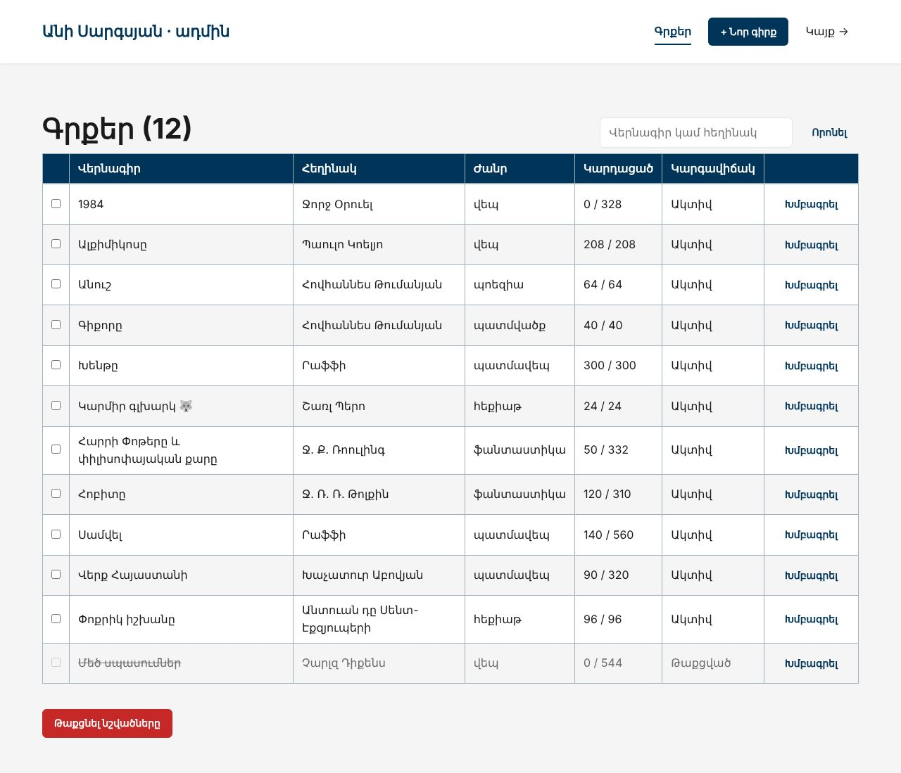
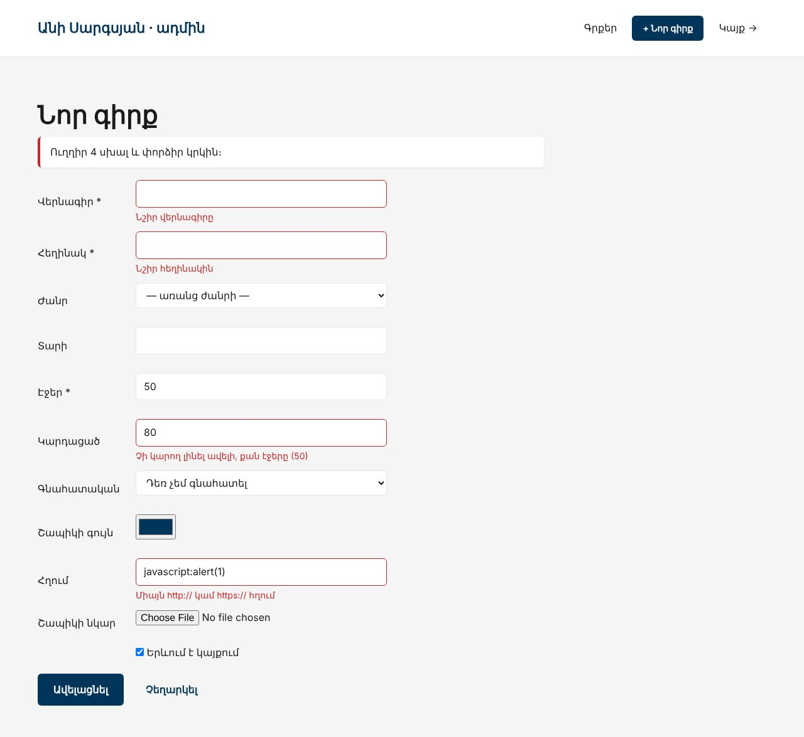
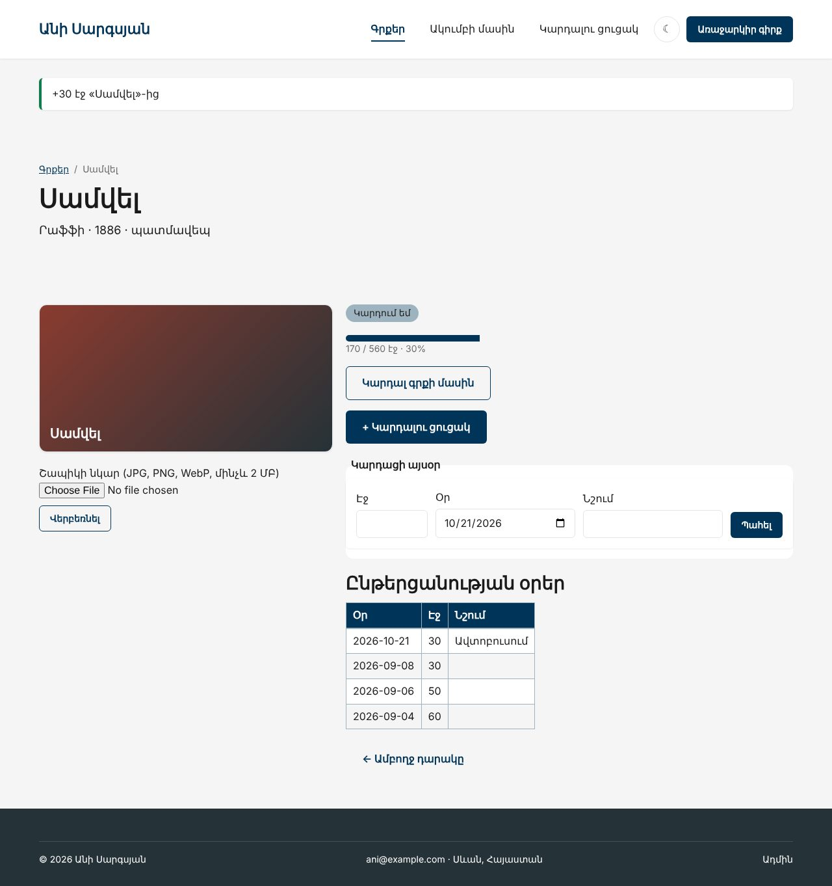

Տնային աշխատանք · PHP Դաս 11 · մինի-նախագիծ
Անին այլևս չի բացում HeidiSQL-ը․ ադմին վահանակում ավելացնում, խմբագրում և թաքցնում է գրքերը, վերբեռնում շապիկը։ Գրքի էջում «Կարդացի այսօր» ֆորման գրում է երկու աղյուսակ մեկ տրանզակցիայով․ կամ երկուսն էլ, կամ ոչ մեկը։
Դաս 01–11․ INSERT, UPDATE, lastInsertId, rowCount, beginTransaction, commit, rollBack, try/catch, slugify(), uniqueSlug(), փափուկ ջնջում (is_active = 0), ids[]։ ⚠️ Ադմինը դեռ բաց է բոլորի համար․ մուտքը՝ Դաս 16։



InnoDB: rollBack()-ից հետո աղյուսակում մնաց 0 տող
MyISAM: rollBack()-ից հետո աղյուսակում մնաց 2 տող
→ MyISAM-ը տրանզակցիա չունի․ rollBack()-ը ոչինչ չի չեղարկում
UPDATE առանց WHERE․ փոխվեց 12 տող՝ ամբողջ աղյուսակը
→ Միշտ նախ SELECT նույն WHERE-ով, հետո UPDATE
Առաջին անգամ rating = 5 · rowCount() = 1
Նույն արժեքով կրկին · rowCount() = 0
Գոյություն չունեցող id · rowCount() = 0
→ 0-ն չի տարբերում «չգտնվեց»-ը «ոչինչ չփոխվեց»-ից։ Գոյությունը ստուգիր SELECT-ովՇարունակիր քո նախագիծը։ Եթե բաց ես թողել նախորդ դասը, սկսիր Դաս 10-ի օրինակից։
starter/css/php-11.css — ադմինի աղյուսակ և «Կարդացի այսօր»| Գործարկել |
|---|
php -S localhost:8000 |
admin/index.php՝ բոլոր գրքերը, ներառյալ թաքցվածները, որոնումով (տնային 8)ids[] checkbox-ներով, «Թաքցնել նշվածները» (տնային 9)admin/form.php՝ մեկ ֆայլ երկու գործի համար, ?id=-ովvalidateBook()՝ read_pages <= pages, javascript: հղումը՝ ոչbookData()՝ միայն թվարկված դաշտերը, ոչ ամբողջ $_POST-ըslugify('Սամվել') → samveluniqueSlug()՝ samvel-2, իսկ խմբագրելիս՝ AND id != :idenctype, Դաս 07-ի uploadImage() (տնային 2)logReading()՝ INSERT reading_sessions + UPDATE books SET read_pages = read_pages + :pages (տնային 3)read_pages + :pages2 <= pages, rowCount() === 0 → բացառություն → rollBackfunction logReading(int $bookId, int $pages, string $date, ?string $note): void
{
$pdo = db();
$pdo->beginTransaction();
try {
$stmt = $pdo->prepare('
INSERT INTO reading_sessions (book_id, pages, read_on, note)
VALUES (:book, :pages, :read_on, :note)
');
$stmt->execute(['book' => $bookId, 'pages' => $pages, 'read_on' => $date, 'note' => $note]);
// Պայմանը WHERE-ում․ եթե մեկ ուրիշ ներդիրից արդեն ավելացրել ես էջեր, չենք անցնի pages-ից
$stmt = $pdo->prepare('
UPDATE books
SET read_pages = read_pages + :pages
WHERE id = :id AND read_pages + :pages2 <= pages
');
$stmt->execute(['pages' => $pages, 'pages2' => $pages, 'id' => $bookId]);
if ($stmt->rowCount() === 0) {
throw new RuntimeException('Էջերը շատ են․ գիրքն այդքան էջ չունի');
}
$pdo->commit();
} catch (Throwable $e) {
$pdo->rollBack(); // INSERT-ը նույնպես չեղարկվում է
throw $e; // կանչողը կորոշի՝ ինչ ցույց տալ
}
}lab-crud.php՝ բացառություն երկրորդ INSERT-ից հետո InnoDB-ում և MyISAM-ում (տնային 4, 5)UPDATE առանց WHERE՝ փորձնական աղյուսակի վրա (տնային 6), rowCount()-ի թակարդը (տնային 7)samvel-2reading_sessions-ում նոր տող չկաread_pages ամեն գրքի համար| Սխալ | Ինչպես ուղղել |
|---|---|
Խմբագրելիս slug-ը դառնում է samvel-2 | uniqueSlug()-ին չես փոխանցել $exceptId |
There is no active transaction | rollBack()-ը կանչվել է commit()-ից հետո կամ beginTransaction()-ից առաջ |
| Checkbox-ը միշտ «Երևում է» | Չնշված checkbox-ը չկա $_POST-ում․ isset($post['is_active']) ? 1 : 0 |
| MyISAM-ում rollBack-ից հետո տողերը մնացին | Դա է փորձի իմաստը․ MyISAM-ը տրանզակցիա չունի |
Սրանք Դաս 11-ի տնային աշխատանքի կետերն են։ «մինի-նախագծում» նշվածները արդեն կատարել ես վերևի քայլերում՝ Անիի ակումբում։ Մնացածը կատարիր ՏեխնոՄարկետում, ինչպես գրված է դասում։
uploadImage())։ մինի-նախագծումcreateOrder()-ը տրանզակցիայով։ մինի-նախագծումINSERT-ից հետո։ Պատվերը մնա՞ց բազայում։ մինի-նախագծումUPDATE-ը առանց WHERE-ի փորձնական աղյուսակի վրա։ մինի-նախագծումrowCount()-ի թակարդը՝ պահպանիր առանց փոփոխության։ մինի-նախագծումԵրբ բաժին 03-ի բոլոր կետերը նշված են, բացիր օրինակը։ Օրինակում lab-… ֆայլերը փորձնական են․ դրանք հաջորդ դասի օրինակում այլևս չկան։ Գործարկելուց առաջ ստեղծիր բազան example/sql/-ի ֆայլերով և config.php-ը։ Գտիր մեկ բան, որ դու արել ես այլ կերպ, և մտածիր՝ որն է ավելի հասկանալի և ինչու։ Քո լուծումը կարող է տարբերվել և լինել ճիշտ։